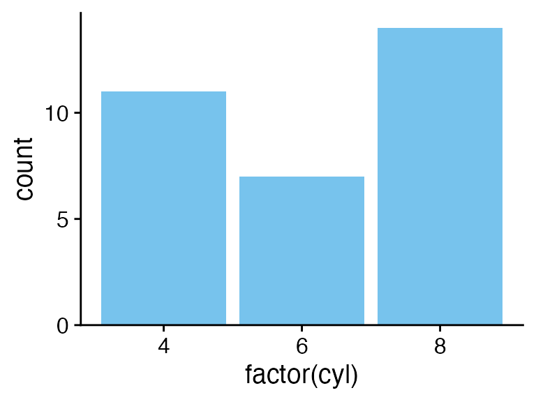
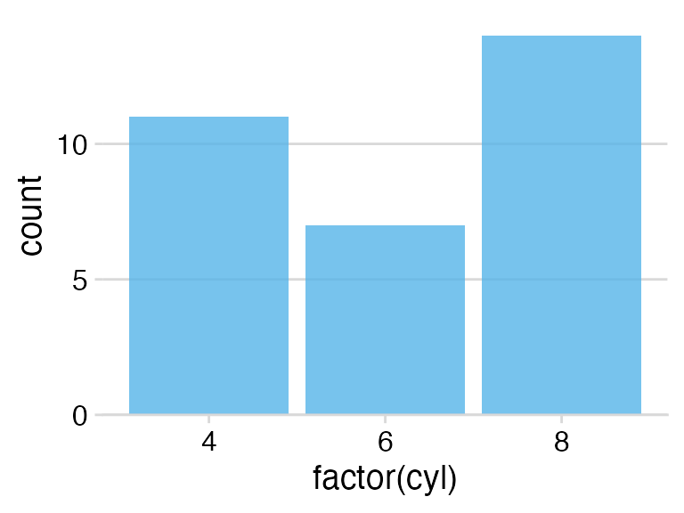
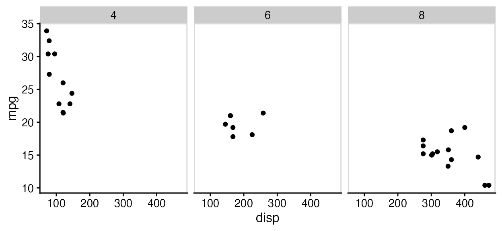

The cowplot package provides a consistent set of plot themes that
cover a wide range of use cases. To see these themes in action, check
out the book Fundamentals
of Data Visualization, which uses them throughout. However,
note that the figures in the book use the font Myriad Pro. Since this
font is not freely available, the cowplot themes use the default R font,
which for most graphic devices is Helvetica. All themes have a
font_family argument that you can use to customize the font
for your own use.
Basic use of plot themes
The theme theme_half_open() (or equivalently,
theme_cowplot()) provides a classical plot appearance with
two axis lines and no background grid. This theme works for most types
of graphs, but it is most appropriate for scatter plots and line
graphs.
## Error in get(paste0(generic, ".", class), envir = get_method_env()) :
## object 'type_sum.accel' not found
library(cowplot)
p <- ggplot(mtcars, aes(disp, mpg)) + geom_point()
p + theme_half_open() # identical to theme_cowplot()
If you like a background grid, you can add it via the standard
ggplot2 theme options. Alternatively, you can use the cowplot function
background_grid(). This function needs to be placed after
the theme call because the theme call overrides all previous theme
settings.
p +
theme_half_open() +
background_grid() # always place this after the theme
If you prefer a minimal appearance with grid and without axis lines,
use theme_minimal_grid().
p + theme_minimal_grid()
All themes can be further customized. For example, the default font
size is 14 point, which works well for figures that are 5 to 8 inches
wide. For smaller figures, you may want to use 12 point. Also, we can
modify the color of the grid lines for
theme_minimal_grid().
p +
theme_minimal_grid(
font_size = 12,
color = "grey70"
)
Choosing themes in the context of the plot
When choosing a plot theme, you should always pay attention to how it
works for your specific plot. For example, if you are making a bar plot,
theme_half_open() generates awkward floating bars because
of ggplot2’s automatic axis expansion (i.e., the x axis line does not
lie at y = 0). I consider such plots to be ugly.
p <- ggplot(mtcars, aes(factor(cyl))) +
geom_bar(fill = "#56B4E9", alpha = 0.8) +
theme_half_open()
stamp_ugly(p)
We can fix this problem by suppressing the axis expansion at the lower end.
p <- ggplot(mtcars, aes(factor(cyl))) +
geom_bar(fill = "#56B4E9", alpha = 0.8) +
scale_y_continuous(
# don't expand y scale at the lower end
expand = expansion(mult = c(0, 0.05))
)
p + theme_half_open()
Bar plots also tend to look awkward on background grids, and I would recommend against this use.
stamp_ugly(
p + theme_minimal_grid()
)
Instead, you can use theme_minimal_hgrid(), which only
draws horizontal grid lines.
p + theme_minimal_hgrid()
If you make a flipped bar plot with horizontal bars, you may instead
want vertical grid lines, which you obtain with
theme_minimal_vgrid().
p +
coord_flip() +
theme_minimal_vgrid()
Faceting
You need to pay special attention when faceting. A theme may look
just fine for a single plot but work poorly in a faceted plot. As an
example, consider what happens when we facet with
theme_half_open().
p <- ggplot(mtcars, aes(disp, mpg)) +
facet_wrap(~factor(cyl)) +
geom_point() +
theme_half_open(12)
stamp_ugly(p)
The three facets don’t visually separate, because ggplot2 does not
repeat the y axis line for each facet. We can improve the situation by
drawing a border around each panel, either via standard ggplot2 theme
calls or using the convenience function panel_border(). As
with background_grid(), this function always has to be
placed after the theme.
p + panel_border() # always place this after the theme
In this particular case, maybe using both a panel border and a background grid is the best option.
p +
panel_border() +
background_grid()
Empty themes
The two themes theme_map() and
theme_nothing() provide stripped-down themes without axes.
theme_map() is similar to theme_void() from
ggplot2 in that it retains the plot title, subtitle, caption, and
legends, and simply removes axis ticks, lines, labels, and gridlines.
All settings are matched to the other cowplot themes, so that you can
mix plots using theme_map() and the other cowplot themes
and they will look consistent.
To demonstrate how these themes work and how they interact with the other themes provided, let’s first make a standard scatter plot with title, subtitle, caption, and legend.
p <- ggplot(mtcars, aes(disp, mpg, color = wt)) +
geom_point() +
labs(
title = "Fuel efficiency in cars",
subtitle = "Bigger and more powerful cars are less efficient",
caption = "Motor Trend, 1974"
)
p + theme_cowplot(12)
The same plot looks as follows with theme_map().
p + theme_map(12)
Notice how all elements that have been retained look the same between this plot and the previous one.
If we draw the same plot with theme_nothing(), then
everything except the plot panel is removed, including titles and
legends.
p + theme_nothing()
This theme is used by ggdraw() and
plot_grid() for the enclosing drawing canvas.